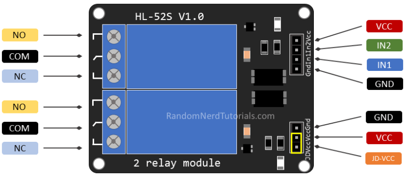
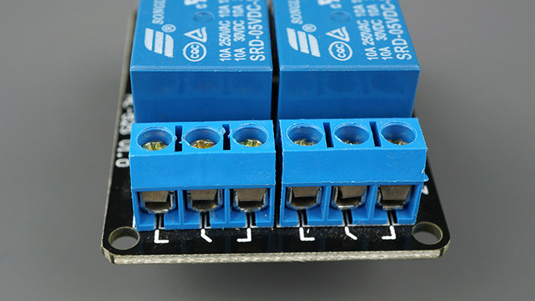
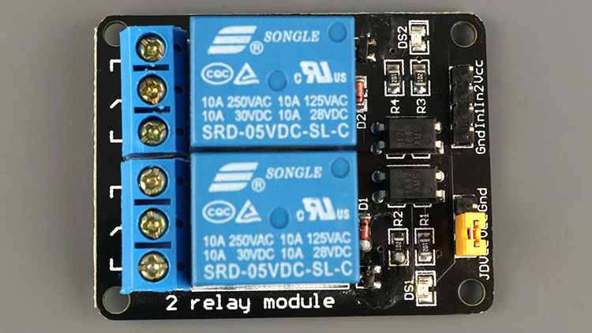
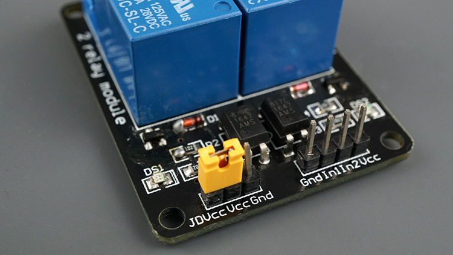

2 Channel Relay Module
{kind=link}
On the left side, there are two sets of three sockets to connect high voltages, and the pins on the right side (low-voltage) connect to the Arduino GPIOs.
Mains Voltage Connections
{kind=link}
The relay module shown in the previous photo has two connectors, each with three sockets: common (COM), Normally Closed (NC), and Normally Open (NO).
COM: connect the current you want to control (mains voltage).
NC (Normally Closed): the normally closed configuration is used when you want the relay to be closed by default. The NC are COM pins are connected, meaning the current is flowing unless you send a signal from the Arduino to the relay module to open the circuit and stop the current flow.
NO (Normally Open): the normally open configuration works the other way around: there is no connection between the NO and COM pins, so the circuit is broken unless you send a signal from the Arduino to close the circuit.
Control Pins
{kind=link}
The low-voltage side has a set of four pins and a set of three pins. The first set consists of VCC and GND to power up the module, and input 1 (IN1) and input 2 (IN2) to control the bottom and top relays, respectively. If your relay module only has one channel, you’ll have just one IN pin. If you have four channels, you’ll have four IN pins, and so on. The signal you send to the IN pins, determines whether the relay is active or not. The relay is triggered when the input goes below about 2V. This means that you’ll have the following scenarios:
Normally Closed configuration (NC):
HIGH signal – current is flowing
LOW signal – current is not flowing
Normally Open configuration (NO):
HIGH signal - current is not flowing
LOW signal – current in flowing
You should use a normally closed configuration when the current should be flowing most of the times, and you only want to stop it occasionally. Use a normally open configuration when you want the current to flow occasionally (for example, turn on a lamp occasionally).
Power Supply Selection
{kind=link}
The second set of pins consists of GND, VCC, and JD-VCC pins. The JD-VCC pin powers the electromagnet of the relay. Notice that the module has a jumper cap connecting the VCC and JD-VCC pins; the one shown here is yellow, but yours may be a different color. With the jumper cap on, the VCC and JD-VCC pins are connected. That means the relay electromagnet is directly powered from the Arduino power pin, so the relay module and the Arduino circuits are not physically isolated from each other. Without the jumper cap, you need to provide an independent power source to power up the relay’s electromagnet through the JD-VCC pin. That configuration physically isolates the relays from the Arduino with the module’s built-in optocoupler, which prevents damage to the Arduino in case of electrical spikes.
Example
2 Channel Relay Module (Basic Project)